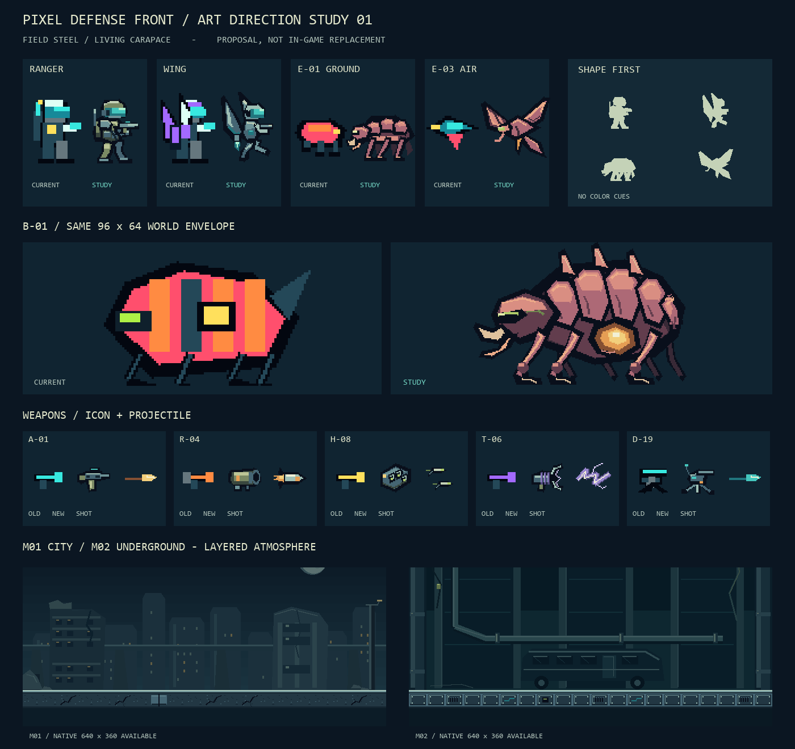
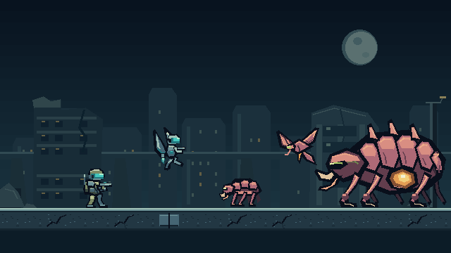
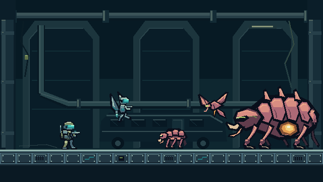

PIXEL DEFENSE FRONT / LOOK DEVELOPMENT
FIELD STEEL / LIVING CARAPACE
軍事SFの鋼材と、侵略生物の甲殻。全差し替え前のアート提案です。ゲーム本体は0.2.3のまま変更していません。
同じ大きさ・同じ倍率で比較
現状も改善案も、兵士24×32・敵32×32・ボス96×64 world px。描画面640はこのプレビューだけの提案です。現行320・0.35倍で細部が失われる点も確認してください。
素材を読み込み中…
非プレイアブルな静止美術見本。ミッション配置・当たり判定・HUDの再現ではありません。左右比較では1枚あたりのCSS表示幅が実ゲームと異なります。背景は既存と同じ論理単位で繰り返し、カメラ端の制作確認用ではありません。
差分一覧 / シルエット確認
旧素材と同じワールド枠で拡大比較。右上の単色シルエットで、色に頼らない識別を確認できます。

サンプル原画
整数座標で描いた透過PNG。各2ポーズはルック見本であり、完成アニメーションではありません。
背景・地形・配役の雰囲気
原画640×360の静止構図。実際のM01/M02の地形や配置を変更するものではありません。


背景レイヤーと制作上の注意
far / middle / near / 合成を各ステージ別に出力。近景は左右端を中心とし、中央戦闘帯の高コントラストを抑えています。全展開時は背景の継ぎ目・パララックスと、WING高所での見え方をゲーム内で検証します。
素材は py -3 tools/generate_assets.py --art-study-only で再生成できます。既存素材は上書きしません。画像生成サービス・外部画像は使っていません。